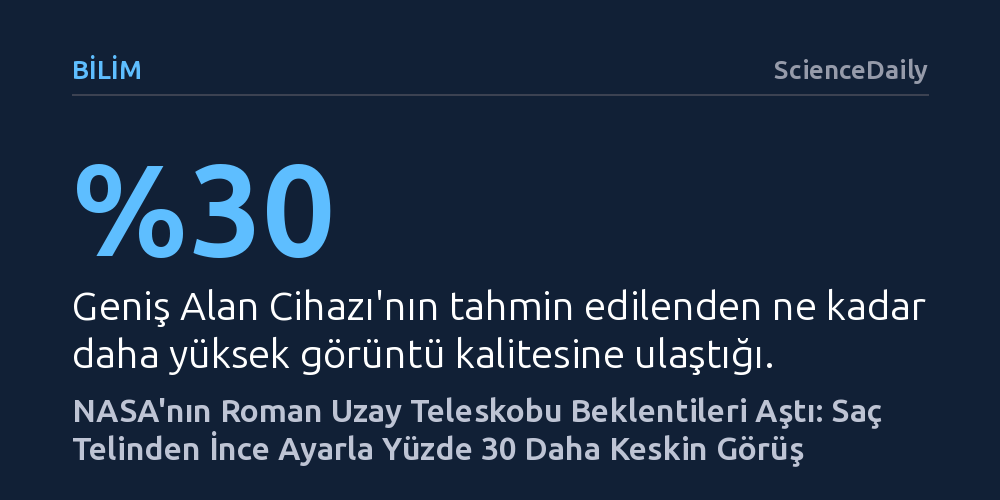

BILIM · ScienceDaily · 2026-10-18
NASA'nın Roman Uzay Teleskobu, ikincil aynasına yapılan mikroskobik ince ayarla hedeflenen görüntü kalitesini yaklaşık yüzde 30 aştı. Ölçülen 63 nanometrelik rekor optik netlik, evrenin karanlık madde ve karanlık enerji haritasını beklenenden çok daha keskin çıkaracak.
Evrenin en büyük gizemlerini çözmenin yolunun devasa boyutlardan değil, bir saç telinin çok küçük bir kesri kadar hassas optik hizalamalardan geçtiğini gösteriyor.

NASA'nın evrenin derinliklerini araştırmak üzere geliştirdiği Nancy Grace Roman Uzay Teleskobu, yörüngedeki ilk kapsamlı optik hizalama ve kalibrasyon testlerini başarıyla tamamladı. Mühendislerin gerçekleştirdiği son derece hassas ayarlamaların ardından gözlemevinin ana kamera sistemi, fırlatma öncesinde öngörülen kuramsal performans sınırını yaklaşık yüzde 30 oranında aştı. Bu gelişme, teleskobun evrenin genişlemesini hızlandıran karanlık enerjiyi ve galaksileri bir arada tutan karanlık maddeyi haritalama hedefine planlanandan çok daha yüksek bir görüntü kalitesiyle ulaşacağını ortaya koyuyor.
Ağustos sonunda uzaya gönderilen Roman Teleskobu, eylül ayı boyunca aşamalı bir devreye alma sürecinden geçirildi. Teleskobun 18 ayrı dedektörden oluşan ana gözlem birimi ile optik bileşenleri teker teker test edildi. Yerdeki zorlu simülasyonların ötesinde, gerçek uzay koşullarında elde edilen ilk sonuçlar, sistemin tasarım şartnamelerini rahatlıkla geride bıraktığını ve beklenenden çok daha berrak kozmik taramalar yapabileceğini kanıtladı.
Elde edilen bu olağanüstü netliğin temelinde, insan ölçeğinde algılanması neredeyse imkânsız bir mekanik müdahale yatıyor. Mühendisler, teleskobun ikincil aynasını yalnızca bir insan saç telinin kalınlığının on altıda biri kadar hareket ettirerek ışığın odak noktasına kusursuz biçimde yönlendirilmesini sağladı. NASA uzmanları bu mikroskobik dokunuşu, Empire State Binası'nın en tepesine tek bir madeni para yerleştirmeye benzetiyor; koca yapının yanında bozuk paranın yarattığı yükseklik farkı neyse, teleskoptaki ayna düzeltmesi de aynı hassasiyeti ifade ediyor.
Bir uzay aracını fırlatma esnasında maruz kaldığı şiddetli sarsıntılara rağmen bu düzeyde dengede tutabilmek mühendislik açısından büyük bir meydan okumadır. Roketin fırlatılışında yaşanan aşırı mekanik yükler, ardından uzay ortamındaki yerçekimsizlik, sert sıcaklık salınımları ve nem farklılıkları en sağlam optik düzenekleri bile kaydırabilir. Ancak Roman'ın yer testlerinde gösterilen titizlik, yörüngede yalnızca mikro düzeyde düzeltmelerle mükemmel odaklamanın yakalanmasını mümkün kıldı.
Teleskobun gözlem gücü iki ana bilimsel aygıta dayanıyor: Geniş Alan Cihazı ve Koronagraf. Her biri küçük bir yapışkan not kâğıdı boyutundaki 18 dedektörden meydana gelen Geniş Alan Cihazı, ışığı dalga boylarına ayıran filtre çarkları ve yerleşik kalibrasyon LED'leri ile donatıldı. Dünya'dan iletilen komutlarla dedektörlerin duyarlılık farkları eşitlendi ve fırlatma sırasında güvenlik amacıyla kasıtlı olarak bozulan odak pozisyonu en keskin konumuna getirildi. Maxime Rizzo bu titiz süreci, "Bir enstrümanı kalibre etmek, konserden önce bir piyanoyu veya gitarı akort etmeye benzer," sözleriyle açıklıyor.
Diğer kritik enstrüman olan Koronagraf ise parlak yıldız ışıklarını engelleyerek yıldızın çevresindeki soluk ötegezegenleri ve enkaz disklerini doğrudan görüntülemek için tasarlandı. İlk etapta hafifçe odak dışı kalan aygıt, şekil değiştirebilen esnek aynaların optimum yapılandırmaya kavuşturulmasıyla beklenen performans standardına ulaştırıldı. Önümüzdeki haftalarda cihazın istenmeyen ışığı engelleme kapasitesi test edilecek ve her iki enstrüman da eşgüdüm içinde tam operasyonel duruma geçirilecek.
Astronomik teleskoplarda görüntü keskinliği, gelen ışık dalgasının ideal odaktan ne kadar saptığını gösteren nanometre cinsinden dalga cephesi hatasıyla (RMS) ölçülüyor. Fırlatma öncesinde Roman Teleskobu için belirlenen azami hata sınırı, insan saç telinden yaklaşık bin kat daha ince olan 90 nanometreydi. Yörüngede tamamlanan hassas ince ayarların ardından kaydedilen fiili sapma ise 63 nanometreye kadar düşürüldü.
Hata payındaki bu belirgin gerileme, teleskobun gökyüzünü tararken kozmik mesafelerden gelen en cılız ışıkları bile dağılmadan toplayabileceği anlamına geliyor. Nancy Grace Roman Uzay Teleskobu, yakaladığı bu keskinlikle yüz milyonlarca galaksiyi kapsayan devasa haritalar çıkaracak, kütleçekimsel merceklenme verileriyle karanlık maddenin görünmez ağlarını ortaya koyacak ve evrenin gizemli genişleme dinamiğine ışık tutacak.